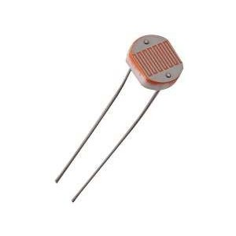

Getting Arduino and Initializing Unit (+/-)
Easy (+/-)
Our team will deliver you a ready-made Ambienators SmartSensor System unit at a negotiable price!
Simply email us at ambienators.nus@gmail.com, providing the following details:
1) Your name
2) Google account email address which you would like to be associated with your account (It could be your personal Google account, or a company Google account. Google Apps accounts are also supported!)
3) How we can contact you (email address / phone number)
Medium (+/-)
In order to setup Arduino environment, you need to work with hardware and software. The software is available free of cost. Hardware components need to be purchased. Approximate hardware cost of this application is US$70-$80. Purchase these products here. Buy from the Arduino store or distributors in your country.
Hardware required:
- 1 Arduino Uno

- 1 Arduino Ethernet Shield
- 1 breadboard
- 1 temperature sensor (LM35, TMP36 or any other sensor)

- 1 light-dependent resistor (LDR)
 - 1 330Ω resistor (first 3 colours orange-orange-brown)

- 1 passive infrared (PIR) sensor
- 11 jumper wires

- LAN cable
- USB cable or 5V external power supply for Arduino (supplied with Arduino board)
Software setup:
The Arduino IDE looks a text editor or word processing software like MS Word. This is where you can write code and program the Arduino board to do things you want.
Read the Arduino guide for your operating system to download the IDE, connect the Arduino Uno and install drivers.
The functions of buttons in the IDE are shown here.
Hardware setup:
Mount the ethernet shield on top of the Arduino Uno. Insert every pin of the shield into the corresponding pin of the Uno board.
Connect the parts according to the following diagram.
Connect the Arduino Uno to your computer with a USB cable. Connect one end of the LAN cable to the ethernet shield and the other end to a modem or LAN port. The power LED on the shield will light up.
Arduino code:
- Open a new sketch in the IDE.
- Copy the code below and paste it in the sketch.
#include <SPI.h> #include <Ethernet.h> //USERS: ONLY ADJUST THESE VALUES //***************************************************************************** String userName = "ambienators.nus"; //Enter your Google Account userame int frequency = 5*60; //Enter how often you want data to be sent, in seconds // Enter the MAC address of your ethernet shield byte mac[] = { 0x00, 0xAA, 0xBB, 0xCC, 0xDE, 0x02 }; //***************************************************************************** //USERS: DO NOT EDIT ANY OF THE CODE BELOW THIS LINE //Cannot use Pins 4,10,11,12,13 as they are in use by ethernet shield //Pins int tempPin = 0; int lightPin = 2; int motionPin = 3; //Data float temp = 0.0; float light = 0.0; volatile int movement = 0; volatile int moves =0; //Server to connect to char serverName[] = "http://ambienators-nus.appspot.com"; // Initialize the Ethernet client library EthernetClient client; void setup() { //analogReference FOR TEMPERATURE, LIGHT AND MOTION SENSORS analogReference(INTERNAL); //INITIALIZE SERIAL MONITOR Serial.begin(9600); //START THE ETHERNET CONNECTION if (Ethernet.begin(mac) == 0) { while(true); } //GIVE THE ETHERNET SHIELD ONE SECOND TO INITIALIZE delay(1000); } //OBTAIN TEMPERATURE //OBTAIN LIGHT //POSTS THE DATA //RESETS MOVEMENT TO 0 //RUNS COUNTDOWN TIMER (getMotion IS INSIDE COUNTDOWN TIMER FUNCTION) void loop() { getLight(); getTemp(); postData(); movement = 0; countdownTimer(frequency); delay(100); } //While the countdown timer is running, movement is checked every second. //Countdown digit is serial printed every second for ease of reference //Once movement is detected, break out of countdown timer loop. //Temp and light is gotten again before posting temp, light and movement. //Afterwhich, countdown timer begins from 0 again. void countdownTimer(int max) { while (max > 0) { Serial.print(max); //FOR SERIAL MONITOR Serial.println(" seconds remaining before next posting."); //FOR SERIAL MONITOR Serial.println(); //FOR SERIAL MONITOR max--; if (getMove() == 1023 ) { movement = 1; Serial.println("MOTION DETECTED! INTERRUPT COUNTDOWN TIMER! Delay 5 seconds."); //FOR SERIAL MONITOR Serial.println(); //FOR SERIAL MONITOR delay(5000); break; } delay(1000); } } void postData() { String temperature = String((int)(temp+0.5)); String lightStr = String((int)(light)); String move = String(movement); String moves1 = String(moves); String data = String("temp="+temperature+"&movement="+move+"&moves="+moves1+"&light="+lightStr); while(!client.connected()) { Serial.println("Connecting to client: "); //FOR SERIAL MONITOR client.connect(serverName, 80); } client.println("POST /arduinopost?username="+userName+" HTTP/1.1"); Serial.println("POST /arduinopost?username="+userName+" HTTP/1.1"); //FOR SERIAL MONITOR client.println("Host: ambienators-nus.appspot.com"); Serial.println("Host: ambienators-nus.appspot.com"); //FOR SERIAL MONITOR client.println("Connection: keep-alive"); Serial.println("Connection: keep-alive"); //FOR SERIAL MONITOR client.print("Content-Length: "); Serial.print("Content-Length: "); //FOR SERIAL MONITOR client.println(data.length()); Serial.println(data.length()); //FOR SERIAL MONITOR client.println("Cache-Control: max-age=0"); Serial.println("Cache-Control: max-age=0"); //FOR SERIAL MONITOR client.println("Content-Type: application/x-www-form-urlencoded"); Serial.println("Content-Type: application/x-www-form-urlencoded"); //FOR SERIAL MONITOR client.println("Accept-Language: en-US,en;q=0.8"); Serial.println("Accept-Language: en-US,en;q=0.8"); //FOR SERIAL MONITOR client.println(); Serial.println(); //FOR SERIAL MONITOR client.print(data); Serial.print(data); //FOR SERIAL MONITOR Serial.println(); //FOR SERIAL MONITOR char c; while(client.available()) { c = client.read(); } client.stop(); Serial.println("Data posted:"); //FOR SERIAL MONITOR Serial.println("Temperature:" + temperature); //FOR SERIAL MONITOR Serial.println("Light Intensity:" + lightStr); //FOR SERIAL MONITOR Serial.println("Motion Status:" + move); //FOR SERIAL MONITOR Serial.println(); //FOR SERIAL MONITOR } void getTemp() { temp = analogRead(tempPin); temp = temp * 100 / 9.31; } void getLight() { light = analogRead(lightPin); light = (light * 100) / 1023; } int getMove() { Serial.print("Checking motion - Motion status:"); Serial.println(analogRead(motionPin)); return analogRead(motionPin); }
- In this code, modify the highlighted values.
String userName = "ambienators.nus";
Modify the default username shown. Change it to the username of the Google Account you wish to be associated with your Arduino unit. It could be your personal Google account, or a company Google account. Google Apps accounts are also supported! The username is your email address without domain. For example, if your email is abc@gmail.com, set the username as abc.int frequency = 15*60;
You can modify how often you want ambient data to be sent from the arduino to the cloud, in seconds. Default value is set to 15*60 seconds (15 minutes). You may modify this. However, to prevent server overload, we do not recommend you set a value less than 5 minutes.byte mac[] = { 0x00, 0xAA, 0xBB, 0xCC, 0xDE, 0x02 };
Enter the MAC address for your Arduino ethernet shield here. Turn the ethernet shield over, and look at the back of the shield to find the MAC address. - Save the changes and upload your sketch. Your unit should begin sending data to the Ambienators webapp.
Using the Ambienators Webapp (+/-)
At this stage, we’ll assume that you have already got the hardware setup and working.
Login:
At Ambienators, we believe in the importance of keeping your data save and secure, and privacy is important. Each Ambienators unit is associated with a Google Account. It could be your personal Google account, or a company Google account. Google Apps accounts are also supported! Simply click on the Login button you see on the top right corner of the page!
View real-time sensor data:
Click on the “Sensors” tab! You’ll see three sets of data: Temperature, Light Intensity and Motion.
View sensor data history:
Click on the “History” tab! You’ll see the three sets of data. It is a self-explanatory table with the date and time shown beside each set of readings.
Change settings:
Click on the “Settings” tab! You can adjust various settings pertaining to temperature units (display your temperature in degrees Celsius, Fahrenheit or Kelvin), time zone and history. Do remember to click save after adjusting the settings.
If you still have any enquiries, you may email us at ambienators.nus@gmail.com.
About the Developers (+/-)


Ambienators was co-developed by two NUS Computer Engineering undergraduates, Pee Choon Hian and Tania Chattopadhyay.
This project was done under the NUS School-Of-Computing Orbital 2014 Summer Programme.
Choon Hian can be contacted at peech@nus.edu.sg.
Tania can be contacted at tchatterjee5@gmail.com